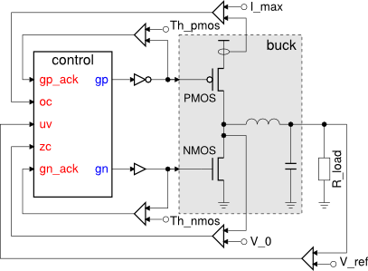
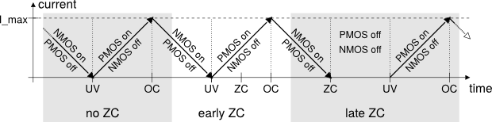
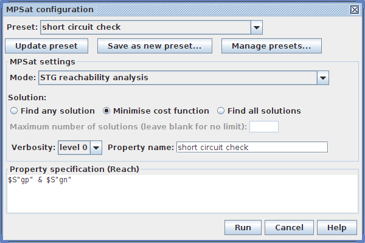
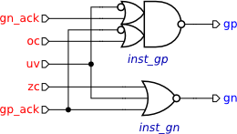

Table of Contents
Synthesis and verification of buck control
Buck converter is a voltage step down and current step up converter. It comprises an analogue buck and its digital control logic as shown in the following diagram. Your task in this tutorial is to formally specify, synthesise and verify the control circuitry of the buck.

The control opens and closes the power regulating PMOS and NMOS transistors of the buck as a reaction to under voltage (UV), over current (OC) and zero crossing (ZC) conditions. These conditions are detected and signalled by a set of specialised sensors implemented as comparators of measured current and voltage levels against some reference values (I_max, V_0, V_ref).
The operation of a buck is usually specified in an intuitive, but rather informal way, e.g. by enumerating the possible sequences of detected conditions and describing the intended reaction to these events, as in the following phase diagram. 
This specification reveals an alternation of the UV and OC conditions which are handled by opening and closing PMOS and NMOS transistors of the buck. Detection of the ZC condition after UV does not change this behaviour, however, if ZC is detected before UV then both the PMOS and NMOS transistors remain closed until the UV event.
It is important to note that in order to avoid a short-circuit the PMOS and NMOS transistors of the buck must never be open at the same time.
Modelling
According to the phase diagram there are three distinctive scenarios to capture:
- no ZC – UV happens without ZC;
- late ZC – UV is followed by ZC;
- early ZC – UV happens after ZC.
Let us capture one of the scenarios, e.g. when UV happens without ZC, in an STG form (create a new STG work and follow the instructions below).
- Initially the NMOS transistor is open and the PMOS transistor is closed which should lead to the UV condition:
- Create a place
p0and mark it with a token - this denotes the initial state. - Create a rising phase of an input signal and call it
uv+. - Connect the place
p0to the transitionuv+.
- When UV is detected the NMOS transistor needs to get closed:
- Create an output transition
gn-. - Connect
uv+togn-.
- Wait for indication of NMOS transistor being closed:
- Create an input transition
gn_ack-. - Connect
gn-togn_ack-,
- When the closing of NMOS is confirmed the PMOS transistor can be open to charge the buck:
- Create an output transition
gp+and an input transitiongp_ack+. - Connect
gn_ack-togp+andgp+togp_ack+.
- Eventually the buck will saturate leading to reset of UV and OC condition:
- Create input transitions
uv-andoc+. - Connect
gp_ack+touv-anduv-tooc+.
- At this stage the PMOS transistor needs to be closed:
- Create an output transition
gp-and an input transitiongp_ack-. - Connect
oc+togp-andgp-togp_ack-.
- After closing of the PMOS transistor is confirmed the NMOS transistor gets open:
- Create an output transition
gn+and an input transitiongn_ack+. - Connect
gp_ack-togn+andgn+togn_ack+.
- This leads to the release of OC and brings us to the initial state:
- Create an input transition
oc-. - Connect
gn_ack+tooc-. - Connect
oc-to the placep0.
The resultant STG listing the sequence of signal events for this scenario is shown in the following diagram. Save this model as stg-buck-scenario1_no_zc.work file.

The scenarios for late ZC is formalised in a very similar ways. Both phases of ZC just happen concurrently with closing of NMOS and opening PMOS transistors.
- Save the no ZC scenario with new name stg-buck-scenario2_late_zc.
- Create two input signal transitions
zc+andzc-. - Connect
uv+tozc+. - Connect
zc+tozc-. - Connect
zc-touv-.
The resultant STG should look similar to the following diagram. Do not forget to save the work!

The scenario for early arrival of ZC is a bit different. Here the NMOS transistor needs to get closed as soon as ZC is detected, without waiting for UV. However, opening of the PMOS transistor is still delayed till UV condition.
- Save the late ZC model under new name stg-buck-scenario3_early_zc.
- Delete incoming and outgoing arcs of
uv+andzc+transitions (just select the arc and press Delete). - Connect place
p0tozc+andzc+togn-. - Connect
zc+touv+anduv+togp+. - Connect
gp+tozc-. - Rearrange transitions to make the STG look nicer (using the selection tool) and save the work.
The STG for early ZC scenario should look similar to the following diagram.

These three behavioural scenarios of the buck operation can be synthesised into independent circuits. However, in order to produce an implementation capable of handling all of the scenarios, these STGs need to be composed into a single specification.
One can see that all three STGs have ‘compatible’ initial states, that is all common input and output signals are set to the same values initially. Therefore we can merge the initially marked place in the three STGs and obtain a combined specification for buck control.
- Create a new STG work called stg-buck-scenarios_combined.
- Insert the STG for no ZC scenario by selecting File→Merge work… menu item and choosing the stg-buck-scenario1_no_zc.work file. After insertion the whole STG is selected - drag-and-drop it aside of the centre as the following steps will insert STGs there.
- Similarly insert the STG for early ZC scenario (stg-buck-scenario3_early_zc.work file) and drag it below the no ZC scenario.
- Finally insert the STG for late ZC scenario (stg-buck-scenario2_late_zc.work file) and drag it above the previously inserted ones.
- Now as you have STGs for all three scenarios in the same work space remove the initial place in two of the scenarios (e.g. in late ZC and early ZC) and reuse the remaining place instead.
The STG combining all three scenarios should look like the following diagram. Do not forget to save the work!

Optional simplification
Once the initially marked places are merged, one can notice that three transitions oc- leading to it can also be merged because their preceding states are ‘compatible’. This process continues with signal event gn_ack+, and so on, ‘zipping’ the common paths of the STGs together. The simplified STG specification for buck control is the following; save it as stg-buck-simplified work. file.

Note that this STG is just a cosmetic improvement over the original one and can be safely skipped. This should not impact on the verification of synthesis steps.
Verification of specification
Activate the simulation tool ![[M] Simulate](../../help/editor_tools-simulate.png "[M] Simulate") and exercise the obtained STG model. Click one of the enabled signal transitions (they are highlighted in orange) to evaluate the STG into the next state. Make sure the simulation traces correspond to those intended by the informal specification of the phase diagram.
and exercise the obtained STG model. Click one of the enabled signal transitions (they are highlighted in orange) to evaluate the STG into the next state. Make sure the simulation traces correspond to those intended by the informal specification of the phase diagram.
Before proceeding to the synthesis step verify the specification for signal consistency (i.e. that the rising and falling phases of each signal alternate in all possible execution traces) and deadlocks.The former is verified via Tools→Verification→Check for consistency [MPSat] menu and the later via Tools→Verification→Check for deadlocks [MPSat] menu.
Another property you need to verify is that PMOS and NMOS transistors are never open simultaneously, i.e. that signals gp and gn are never hight at the same time. This design-specific property can be formulated as a reachability analysis problem using Reach language:
- Open a specialised MPSat configuration window by selecting Tools→Verification→Custom properties [MPSat]… menu.
- In MPSat settings set the Mode into STG reachability analysis and the Solution into Minimise cost function.
- Give this this property a meaningful name, e.g. Short circuit check
- Enter a Reach expression that identifies the short-circuit, i.e. both
gpandgnsignals are high –$S“gp” & $S“gn”. 1). - Save this property it as a preset for future use, e.g. under short circuit check name.
The whole custom property window should look as follows.

When you click the Run button the STG will be searched for a state where the Reach expression evaluates to True. If such a state exists then the property is violated. Otherwise, the property is satisfied.
If the verified property is violated, then a trace leading to the problematic state is reported. This trace can be simulated to diagnose the problem and correct it at the level of STG specification.
Synthesis
The STG specification can now be synthesised into an asynchronous circuit implementation either with Petrify or MPSat backend tools via Tools→Synthesis menu.
A complex gate solution obtained with Petrify (via Complex gate synthesis [Petrify] menu) is as follows Note that solution is not unique and you may get a slightly different set of equations. :
[gp] = uv gn_ack' + gp_ack oc'; [gn] = zc' uv' gp_ack';
Using De Morgan's low one can derive the following negative gate implementation:
[gp] = ((uv' + gn_ack) (gp_ack' + oc))'; [gn] = (zc + uv + gp_ack)';
These equations can be mapped into complex gates with the following functions: Z=(A'+B)*(C'+D))' for gp and Z=(A+B+C)' for gn. Let us call the former gate NAO2N2N and the later NR3.
Association of the pins is best describe by the following Verilog netlist:
module control (oc, uv, zc, gp_ack, gn_ack, gp, gn); input oc, uv, zc, gp_ack, gn_ack; output gp, gn; NAO2N2N inst_gp (.A(uv), .B(gn_ack), .C(gp_ack), .D(oc), .Z(gp)); NR3 inst_gn (.A(zc), .B(uv), .C(gp_ack), .Z(gn)); endmodule
Circuit capturing
Create a new Digital Circuit work called circuit-buck-cg and capture the implementation suggested by Petrify in form of a gate-level netlist. In the future versions of Workcraft the derivation of a circuit from the synthesis output will be automated, but for now please do it manually.
- Create a Digital Circuit work circuit-buck-cg.
- Add a functional component with a set function
((A' + B) * (C' + D))'2). Rename it toinst_gpand change its rendering type to GATE. - Add a functional component with a set function
(A + B + C)'3). Rename it toinst_gnand change its rendering type to GATE. - Create two output ports
gpandgn. - Connect the output of
inst_gpto thegpport and the output ofinst_gngate to thegnport. - Create input ports
gn_ack,oc,uv,zcandgp_ack. - Connect the input port to the corresponding pins of the
inst_gpandinst_gngates. Make use of joint generator![[J] Joint](../../help/editor_tools-joint.png "[J] Joint") for forking the connections.
for forking the connections.
- Set the initial state of
gnandgn_acksignals to1. For this select the corresponding ports and in the Property editor tick the Init to one check box.
The captured circuit should look like this.

Verification of implementation
Activate the simulation tool and simulate the captured complex gate implementation of the buck control. Ports, pins and wires are colour-coded: blue means low level and red means high level of the signal. Excited pins and ports are highlighted in orange.
Click an exited pin to toggle its logical value – the circuit will evaluate to the next state where new set of signals will be enabled. The sequence of signal events is recorded in the simulation trace and can be subsequently replayed for analysing the circuit behaviour.
Note that the switching of input ports is not restricted. Environment can change them at any time causing unspecified behaviour of the circuit. You can restrict this behaviour by composing the circuit with the specification of its environment. The STG that was used at the synthesis stage is a good candidate for such a specification as it models both the buck control and its environment.
- Activate selection tool and make sure nothing is selected – the Property editor will shoow the properties of the whole circuit.
- Click the Environment URI property - a file browser will pop up. Locate the stg-buck-scenarios_composed.work file and open it. A path to that file will be copied to the Environment URI property 4).
Now all the circuit verification will be made in the context of the environment that behaves according to STG in stg-buck-scenarios_composed.work file. Check the circuit for hazards, deadlocks and verify if it conforms to the environment specification. All these verification steps can be run via Tools→Verification→Check circuit for conformation, deadlocks and hazards (reuse unfolding) menu.
Try to alter the circuit and verify if it still conforms to the environment, is deadlock-free and operates without hazards.
Solutions
Download all the Workcraft models discussed in this tutorial here:
Buck control models (23.18 KiB, 2M ago)